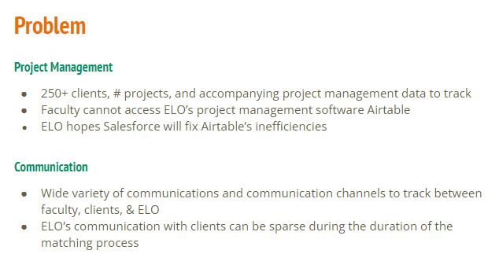
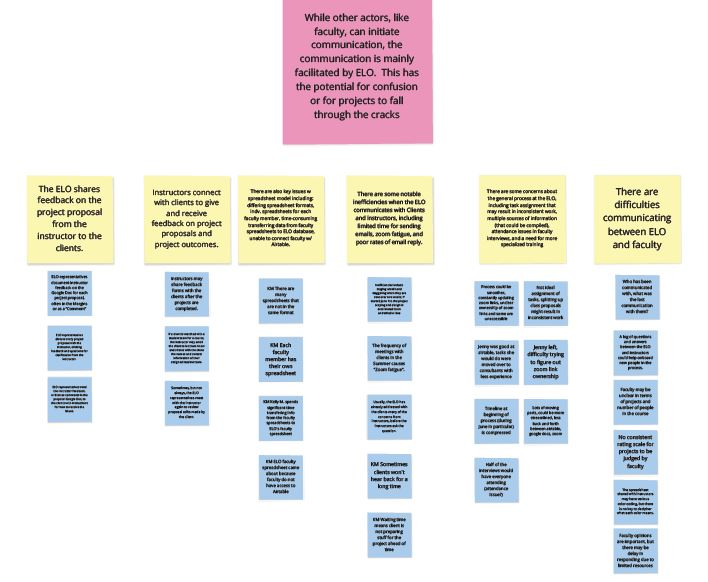
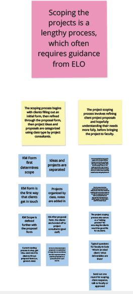
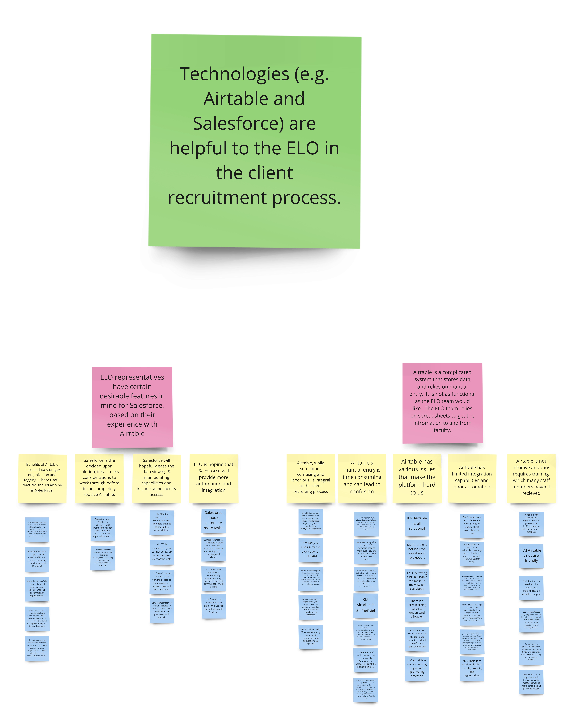
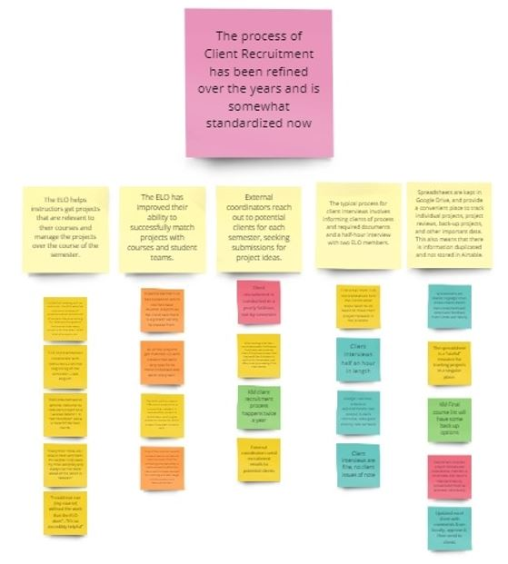
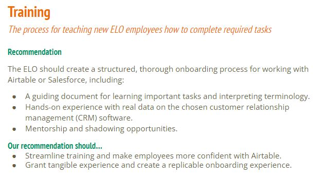
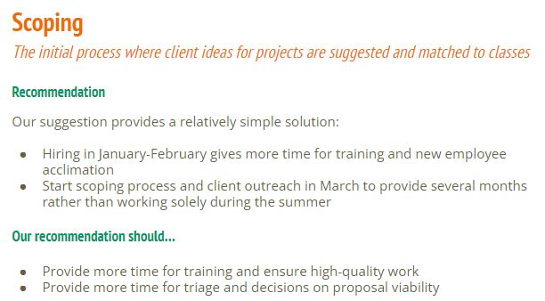
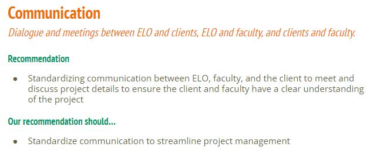
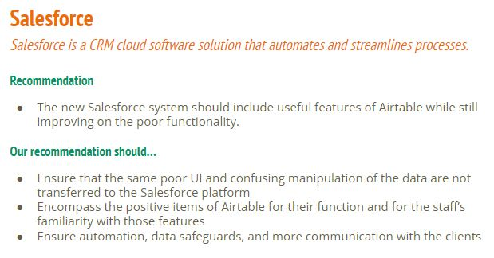

The Problem- the client expressed frustration with their current database management system and their overall process for customer recruitment and matching, a yearly process that is a large portion of their work. After meeting with the client to understand the organization and their goals for this project, we wereready to start conducting interviews with the three different stakeholder groups.
Contextual Inquiry- prepping the interview questions well in advance proved useful and I improved my inquiry skills with each iteration. As I drilled down to understand what exactly is not functional about their recruitment and matching methods, their communication with their customers, and Airtable, I was able to collect a lot of qualitative data.
 Affinity Wall- these translate to recommendations for how their new platform, Salesforce, should function.
Productive Client Solutions- the process was very informative and led to several implications. Every finding was attached to a recommendation. I strived to ensure that every recommendation included actionable steps, with a timeline and the intended improved outcomes.
For example, it became apparent that their process of recruiting, scoping, and matching customers to the right program is a lengthy process that has several points of improvement. Check out what I presented to the clients below!
   